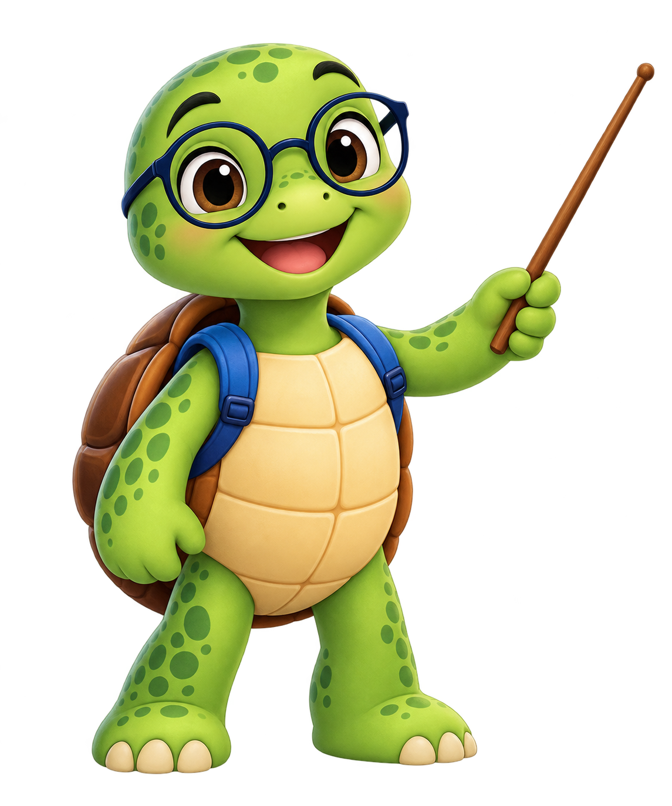

🧑🏫 Classroom
Your question stays visible on the whiteboard while Turtle teaches it.
🧑🏫 Teacher Turtle

CLASSROOM WHITEBOARD · READY
QUESTIONWhat are we learning today?
Type any study question above. Turtle will build a short live AI lesson for that exact question.
✍ Try it yourself
After Turtle explains a topic, a related practice question appears here.
Step-by-step support
Move back and forward, ask for a hint, or replay the current explanation.